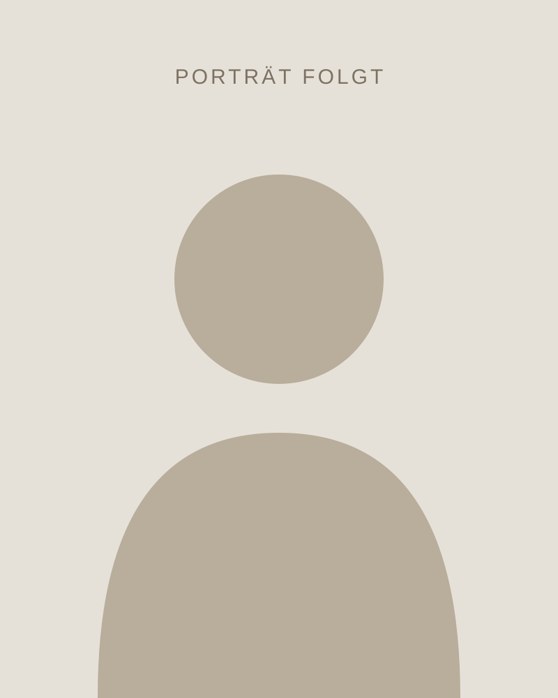

Vorname Nachname
Bauplanung für Menschen, die in Wismar und Umgebung ein Zuhause schaffen wollen.Building design for people who want to create a home in and around Wismar.
Ich bin in Mecklenburg aufgewachsen und kenne die Häuser, das Wetter und die Landschaft hier. Diese Erfahrung fließt in jede Planung ein: Ein Haus an der Ostsee braucht andere Lösungen als eines in der Stadt.I grew up in Mecklenburg and know the houses, the weather and the landscape here. That experience goes into every design: a house on the Baltic coast needs different solutions from one in town.
Besonders am Herzen liegen mir alte Gebäude. Sie zu erhalten ist oft nachhaltiger als neu zu bauen. Und weil ein Haus erst mit seinem Garten vollständig ist, plane ich beides zusammen.Old buildings are especially close to my heart. Preserving them is often more sustainable than building new. And because a house is only complete with its garden, I design both together.
(Testtext. Werdegang, Ausbildung und Fotos folgen.)(Sample text. Background, training and photos to follow.)

Was mir wichtig istWhat matters to me
VerständlichClear
Ich erkläre Pläne und Kosten so, dass Sie gut entscheiden können.I explain plans and costs so you can make good decisions.
RegionalLocal
Ich arbeite mit Handwerksbetrieben aus der Region und kenne die Behörden vor Ort.I work with local contractors and know the local authorities.
NachhaltigSustainable
Natürliche Baustoffe, sparsamer Energieverbrauch, Gärten mit heimischen Pflanzen.Natural materials, low energy use, gardens with native plants.
Lassen Sie uns sprechenLet's talk
Erzählen Sie mir von Ihrem Vorhaben. Das erste Gespräch ist unverbindlich.Tell me about your plans. The first meeting is free of obligation.